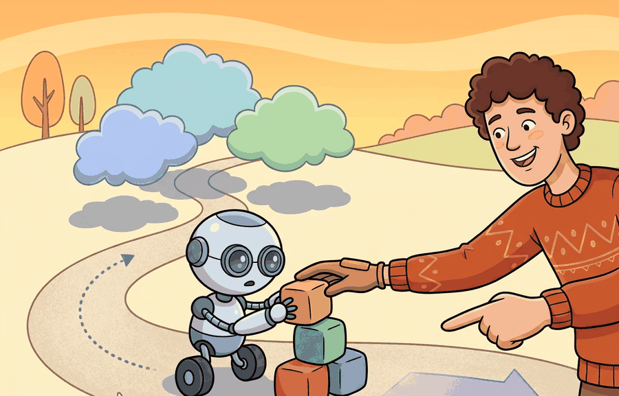

Shared autonomy is not backseat driving if the backseat has the better obstacle sensor.
A Shared Workspace

This section assumes familiarity with teleoperation pipelines and demonstration logging from section 23.2 and section 23.6, and with the intent inference problem introduced in section 50.3. The shared-autonomy formalism developed here is applied to reward learning in section 18.5, where human corrections during teleoperation supply the preference signal. Ethical dimensions of authority allocation are examined next in section 50.6.
A surgeon guides a robotic arm through a tremor-prone incision: the robot smooths the motion, but the moment the surgeon pulls back, full control returns instantly. That quiet negotiation, who acts, when, and by how much, is shared autonomy. As embodied AI moves into hospitals, homes, and public spaces, getting this handoff wrong costs lives or erodes the trust that makes robots useful at all. Here you will learn how to represent the authority slider formally, how human corrections become training signal, and how to design systems where every assistive override is logged, bounded, and reversible.
human feedback and shared autonomy becomes useful when it is tied to a named interface, a replayable scenario, a failure diagnostic, and an artifact that records what changed in the action loop.
The key question is practical: When should the robot follow, assist, ask, override, or stop, and how is each handoff logged?
A representation earns its place when it changes the measurable action interface. In human feedback and shared autonomy, the reader should keep asking which decision becomes easier, safer, or more reliable.
Theory
For Human feedback and shared autonomy, the practical design rule is to make the interface inspectable before optimization begins: inputs, outputs, units, latency, bounds, and failure labels should all be visible in the saved artifact.
The mechanism in Human feedback and shared autonomy is the contract between representation and action. Name what enters the module, what leaves it, which assumptions make that transformation valid, and which log would reveal a bad handoff.
Worked Example
Consider joystick control for a wheelchair or manipulator. The human indicates intent, the robot smooths motion around hazards, and the system must make every assistive correction visible and reversible.
Consider a specific case: a motorized wheelchair user pushes the joystick at full deflection toward a doorway that is 80 cm wide. The wheelchair's lidar detects that the user's heading will clip the right door frame by 12 cm. With $\alpha_t = 0.9$ (human-led), the blended command reduces lateral velocity from 0.4 m/s to 0.1 m/s on the right side, steering the chair through the center of the opening without the user noticing a takeover. The system logs: timestamp, user command vector (0.4, 0.0), robot correction vector (0.0, -0.12), blended output (0.36, -0.11), authority level 0.9, trigger reason "doorframe proximity 12 cm." When the user exits the doorway, $\alpha_t$ returns to 1.0 and full joystick response resumes within 200 ms. This trace is the evidence that the assistive correction was reversible and bounded, not a silent override that erodes trust over repeated trips.
The hand-built fragment is about 12 lines and names only a step. In practice, use ROS 2 actions, teleoperation logs, and LeRobot-style demonstrations; the tools handle streaming input, cancellation, replay, and policy training while the small version keeps authority states explicit.
Practical Recipe
- Write the observation, action, and success metric before choosing a model.
- Build a baseline that is simple enough to debug by inspection.
- Add the library implementation only after the baseline behavior is understood.
- Record failures as structured cases: perception error, state error, planning error, control error, or evaluation error.
- Run at least one perturbation test before trusting the result.
The common mistake in Human feedback and shared autonomy is to celebrate the component score before checking the closed-loop handoff. The failure usually appears at the boundary: stale state, wrong frame, delayed action, saturated actuator, or metric that ignores the real task cost.
A shared-autonomy study should log user command, robot inference, autonomy level, override reason, final action, and user correction. The best evidence is often a paired trace showing human-only and assisted control on the same task.
Shared autonomy research blends intent inference, low-dimensional control spaces, language guidance, and learned assistance. Results should report human workload, correction rate, and failure recovery, not only task completion.
RLHF for robotics (Ouyang et al., 2022; applied to robot preference learning in 2023 and 2024 work) is particularly relevant to shared autonomy because human corrections during teleoperation are a natural source of preference signal. Rather than treating corrections as behavioral cloning targets, preference-based methods treat them as evidence about what the user prefers, training a reward model that can generalize to novel situations where the user has not yet corrected the robot. This shifts shared autonomy from intent inference to preference learning, moving the adaptation from execution-time to before-deployment, with the open question of how many correction examples are needed for the learned reward to match the user's intent across a full task distribution.
Can you name the observation, state estimate, action, success metric, and most likely failure mode for human feedback and shared autonomy? If not, the system boundary is still too vague.
Human feedback and shared autonomy becomes useful when it is tied to a closed-loop contract for Human-Robot Interaction. The contract names the participants, observations, action authority, timing budget, logging artifact, and recovery rule. Without that contract, a system can look capable in a notebook while failing the first time a partner delays, a person corrects it, or a deployment scene changes.
For Human feedback and shared autonomy, separate the conceptual claim, the systems claim, and the evidence claim. A plausible mechanism, a clean interface, and a closed-loop result are different claims; the section should keep their evidence separate.
| Tool or Library | Role in the Topic | Builder Advice |
|---|---|---|
| ROS 2 | Human feedback and shared autonomy | Represent robot state, alerts, and operator commands with inspectable interfaces. |
| LeRobot | Human feedback and shared autonomy | Collect and replay human demonstrations for feedback and shared-autonomy studies. |
| MuJoCo | Human feedback and shared autonomy | Prototype risky interaction policies before any human-facing trial. |
| Gymnasium | Human feedback and shared autonomy | Build small decision tasks that isolate trust, intent, or feedback mechanisms. |
| PettingZoo | Human feedback and shared autonomy | Model mixed human-robot roles as interacting agents when turn order matters. |
For Human feedback and shared autonomy, the baseline and maintained-tool version should produce the same artifact schema and run on one task panel. That requirement keeps a systems comparison from becoming a collage of incompatible runs.
- Write a one-paragraph task contract with observation, action, success, and failure fields.
- Start with the smallest simulator, dataset, or wrapper that exposes the task contract faithfully.
- Run one deterministic smoke test and one perturbation test before scaling.
- Save a single result artifact containing configuration, seed, metrics, videos or traces, and failure labels.
- Compare methods only when one script evaluates them on the same task panel.
When Human feedback and shared autonomy fails, avoid labeling the whole method as weak. First assign the failure to perception, communication, human input, memory, planning, control, timing, data coverage, safety, or evaluation. Then rerun one controlled perturbation that isolates the suspected cause. This pattern turns a disappointing rollout into a reusable diagnostic asset.
Agent Checklist Applied
The 42-agent production pass treats human feedback and shared autonomy as a buildable system, not a definition. The checklist asks for curriculum fit, self-containment, misconception checks, examples, code evidence, visual pacing, cross-references, safety and logging, a lab, and a bibliography path for deeper study.
For Human feedback and shared autonomy, connect HRI design to whole-body control, language guidance, teleoperation data, safety review, and deployment logging through one interaction transcript.
A common misconception is that autonomy level is a fixed slider. The diagnostic question is: does authority change when uncertainty, risk, or user correction changes?
Define a five-state authority machine: human control, robot assist, clarification, safety override, and stop. Specify the event that moves between states.
Shared autonomy is not backseat driving if the backseat has the better obstacle sensor.
Technical Core
Human feedback and shared autonomy needs a topic-native core: variables, equations or system contracts, an algorithmic procedure, an expected output, and a failure diagnosis. Figure 50.5.T summarizes the chain this section must preserve when moving from a teaching example to a real embodied system.
$u_t=\alpha_t u_t^{\mathrm{human}} + (1-\alpha_t)u_t^{\mathrm{robot}},\quad \alpha_t=f(\sigma_t,\rho_t,\kappa_t)$
Shared autonomy is an authority-allocation problem. The blending weight $\alpha_t$ should depend on human confidence, robot uncertainty, and risk. Good systems vary authority over time instead of freezing the human and robot into one static control split.
When implementing the blending weight $\alpha_t$ in ROS 2, publish it on a dedicated /authority_level topic with a stamped Float32Stamped message rather than burying it inside a larger status message. Downstream nodes (safety monitor, HMI display, rosbag filter) can then subscribe independently without parsing the full control state. Set a ~publish_rate parameter of at least 50 Hz so that authority transitions are time-aligned with the control loop in post-hoc bag analysis; a 10 Hz authority stream on a 100 Hz control loop creates ambiguous attribution windows when diagnosing a near-miss. Log the trigger_reason string alongside the numeric weight so replays remain self-explanatory without a separate experiment notebook.
- Estimate robot uncertainty $\sigma_t$, risk $\rho_t$, and operator workload $\kappa_t$.
- Blend commands only inside a safety envelope; outside it, trigger clarification or stop modes.
- Log who had authority at each timestep and why the mode changed.
- Evaluate task success together with takeover rate, recovery speed, and operator fatigue.
| Mode | Who Leads | When To Use |
|---|---|---|
| Manual | Human | Novel scene, unreliable autonomy, or user preference. |
| Assistive | Human with robot filtering | High-rate motor task with low-level hazards. |
| Supervisory | Robot with human veto | Routine operation with rare but costly edge cases. |
| Protective override | Safety controller | Constraint violation or imminent collision. |
# Blend authority based on uncertainty and risk.
states = [
{"uncertainty": 0.15, "risk": 0.20, "alpha_human": 0.25},
{"uncertainty": 0.55, "risk": 0.80, "alpha_human": 0.90},
]
for state in states:
mode = "assistive" if state["alpha_human"] < 0.5 else "human_led"
print(mode, state["alpha_human"], state["uncertainty"], state["risk"])assistive 0.25 0.15 0.2 human_led 0.9 0.55 0.8
The second line is the crucial one. The same interface that feels efficient in a routine scene becomes unsafe in a high-risk scene unless control authority shifts. Readers should connect this directly to interface design, logging, and study design, not treat it as a purely control-theoretic detail.
Shared autonomy fails when the robot blends commands smoothly but does not tell the human when authority changed. Always test surprise takeovers and delayed interventions, because trust collapses when people cannot predict who is currently in charge.
Human feedback and shared autonomy succeed when authority shifts are explicit, reversible, and logged.
Design a method-matched experiment for Human feedback and shared autonomy. Specify the environment, observation schema, action interface, metric, and one perturbation that targets the section's core assumption.
Section References
Goodrich, M. A. and Schultz, A. C. Human-Robot Interaction: A Survey. Foundations and Trends in Human-Computer Interaction, 2007.
Use for HRI vocabulary, autonomy levels, and human factors framing.
Dragan, A. D., Lee, K. C. T., and Srinivasa, S. S. Legibility and Predictability of Robot Motion. HRI, 2013.
Use for motion that communicates intent rather than merely reaching the goal.